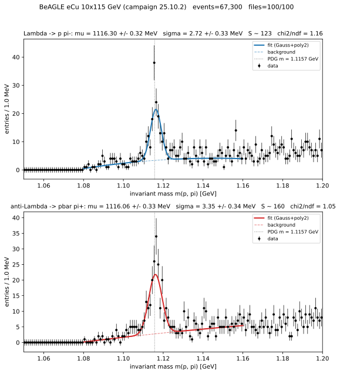

An end-to-end, reproducible Λ⁰ analysis
Last updated on 2026-07-11 | Edit this page
Overview
Questions
- How do assistant + server + skill compose into one analysis?
- How does the kernel scale from one file to the full sample?
- How is the yield extracted and made reproducible?
Objectives
- Set up any MCP client for the end-to-end run in three steps.
- Pick the right kernel tool for the sample size
(
execute_kernelvsexecute_kernel_dataset). - Sign off — or reject — an agent-produced yield using the audit checklist.
Run it in your client
Everything below runs from the same three-step setup, whatever assistant you use:
Inside eic-shell, start the servers:
eic-mcp up.-
In your analysis directory, connect your client and put the Episode 4 files in place:
Launch
opencode, check/mcplistsuproot,xrootd, andrucio, and paste the pipeline prompt below.
Same pipeline, other clients
Only step 2 changes:
mkdir -p .vscode && eic-mcp config copilot > .vscode/mcp.json
(VS Code/Copilot, Agent mode),
mkdir -p .cursor && eic-mcp config cursor > .cursor/mcp.json,
eic-mcp config claude > .mcp.json (Claude Code),
mkdir -p .gemini && eic-mcp config gemini > .gemini/settings.json
(Gemini CLI), or
eic-mcp config codex >> ~/.codex/config.toml (Codex).
The servers and prompts are identical; put the skill where your client
reads skills (.claude/skills/ for Claude Code).
The composed pipeline
The previous episodes combine into one procedure run from a single request: the lambda-fit skill (Episode 4) supplies the steps, the uproot tool server (Episode 3) supplies verifiable data access, and the agentic loop (Episode 1) carries it out and checks the result.
%%{init: {'theme':'base', 'themeVariables': {'fontSize':'15px','lineColor':'#94a3b8','edgeLabelBackground':'#e2e8f0','clusterBkg':'#1f293720','clusterBorder':'#94a3b8','titleColor':'#94a3b8'}}}%%
flowchart LR
accTitle: {End-to-end agent run}
accDescr: {End-to-end agent run}
A["resolve input<br/>root:// file or file list"]:::data --> B["build m(p,π) histogram<br/>uproot MCP · execute_kernel"]:::tool
B --> C["fit Gaussian + poly-2<br/>opencode prompt"]:::tool
C --> D["report μ, σ, S, χ²/ndf<br/>+ plot + provenance"]:::out
classDef data fill:#fff4e0,stroke:#f08c00,stroke-width:1.5px,color:#5c3b00;
classDef tool fill:#e6f7ed,stroke:#2f9e44,stroke-width:1.5px,color:#0b3d1f;
classDef out fill:#f3e8ff,stroke:#7048e8,stroke-width:1.5px,color:#2e1065;One file, end to end
With the three servers running and the lambda-fit skill available,
one request runs the whole chain. Point it at one of the dataset’s
root:// files. The assistant uses rucio tools
to find a DIS dataset and list_file_replicas for the URLs,
xrootd to confirm the file is there, then reads it in
place:
Using the lambda-fit skill, measure the Lambda0 peak in this file:
root://epicxrd1.sdcc.bnl.gov:1095//... (one of the dataset's root:// files).
Build the proton-pion invariant-mass histogram with the uproot MCP server (tree 'events'),
fit it, and report mu, sigma, the yield, and chi2/ndf, with the plot.The assistant calls execute_kernel (tree
events, proton/pion branches) to build the histogram, then
a follow-up prompt fits it with a Gaussian-plus-polynomial model. On a
single file the peak sits at \(\mu \approx
1.1157\) GeV; its significance is limited by the small event
count, addressed next.
Smaller models take shortcuts — verify the result, not the route
A capable model uses execute_kernel as instructed. A
cheaper model may reach for execute_kernel_dataset on a
single file, or write its own NumPy in the kernel — both produce the
same histogram. The audit checklist below judges the result
(peak position, width, \(\chi^2/\text{ndf}\), recorded inputs), not
which tool produced it.
Scaling to the full sample
The same kernel applies unchanged to many files; only the tool
differs. execute_kernel runs one file;
execute_kernel_dataset dispatches the identical kernel
across a whole file list and returns one merged histogram, so peak
memory is independent of dataset size. Enumerate the files with
get_dataset_file_list, then fan the kernel out:
Using the lambda-fit skill, run the same proton-pion mass kernel across the dataset's files
with execute_kernel_dataset (tree 'events'), merge the histograms, then fit the result and
report mu, sigma, the yield, and chi2/ndf for both Lambda and anti-Lambda, with the plot.The kernel sandbox is NumPy/awkward only (no imports, no I/O), so the
assistant returns the merged histogram and runs a follow-up fit prompt.
One practical limit: a synchronous execute_kernel_dataset
call over ~8 files already takes about a minute, which is exactly where
many clients cut a tool call off. For anything bigger, the async route
is the right one — submit_kernel_dataset, then poll
get_job_status/get_job_result. Over ~100 files
this gives the reference spectrum below: a clear Λ⁰ (and Λ̄) peak over
the combinatorial background.

OUTPUT
Lambda -> p pi-: mu = 1116.30 +/- 0.32 MeV sigma = 2.72 +/- 0.33 MeV S = 123 chi2/ndf = 1.16
anti-Lambda -> pbar pi+: mu = 1116.06 +/- 0.33 MeV sigma = 3.35 +/- 0.34 MeV S = 160 chi2/ndf = 1.05The fitted \(\mu\) sits ~0.6 MeV above the PDG value (1.115683 GeV), a calibration-level offset typical of reconstructed momenta; \(\sigma\) is the detector mass resolution, not the (negligible) Λ⁰ natural width.
Extracting the yield
The fit model is a Gaussian signal on a second-order polynomial background over \([1.08, 1.16]\) GeV:
\[ f(m) = A \exp\!\left[ -\tfrac{1}{2} (m - \mu)^2 / \sigma^2 \right] + \left( c_0 + c_1 (m - m_\Lambda) + c_2 (m - m_\Lambda)^2 \right) \]
The polynomial absorbs the combinatorial background (Episode 2); the integrated signal is \(S = A\sqrt{2\pi}\,\sigma / (\text{bin width})\). Report \(S\) with its uncertainty alongside \(\mu\), \(\sigma\), and \(\chi^2/\text{ndf}\) — a bare bin count conflates signal with background.
Reproducibility and audit
Before treating an automated result as final, confirm it meets the skill’s criteria:
Audit checklist
- Signal. \(\mu\) within a few MeV of 1.115683 GeV; \(\sigma\) consistent with detector resolution; \(\chi^2/\text{ndf}\) of order unity; \(S\) reported with an uncertainty.
- Inputs pinned. Dataset (campaign and file list), particle masses, mass window, binning, and fit range all fixed and recorded.
- Provenance. Tool calls and their arguments logged, so the run can be reconstructed.
-
Cost bounded. File count capped during development
before scaling up with
execute_kernel_dataset. - Oversight. A human inspected the fit before the result was reported.
Exercises (specification)
- Run the single-file chain through your assistant and report \(\mu\), \(\sigma\), \(S\), and \(\chi^2/\text{ndf}\).
- Process 10 files with
execute_kernel_datasetand compare the fitted parameters to the ~100-file result; comment on the change in statistical uncertainty. - Complete the audit checklist for your run, attaching the recorded tool calls as provenance.
Try a different beam
Nothing here is tied to the eCu sample — point the skill at any
reconstructed-DIS DID and the same prompt works. Nuclear beams (eCu,
eAu) give the most Λ per event; plain ep samples need a few times more
files for the same peak, but have thousands to spare. Find the DIDs with
list_dids as in Episode 3.
You now have the complete workflow: a free assistant, portable tool servers, a versioned skill, and a reproducible Λ⁰ measurement whose every step you can verify. The final episode catalogues the other MCP servers the EIC provides.
- The full analysis composes Episodes 1, 3, and 4: the agentic loop, the uproot MCP tools, and the lambda-fit skill.
- The same kernel scales from
execute_kernel(one root:// file) throughexecute_kernel_dataset(a small batch) to the asyncsubmit_kernel_dataset(the full sample), merging into one histogram. - The yield comes from a Gaussian-plus-polynomial fit; report \(\mu\), \(\sigma\), \(S\), and \(\chi^2/\text{ndf}\), not a bare count.
- Pinning inputs and recording tool calls make the measurement reproducible and auditable.